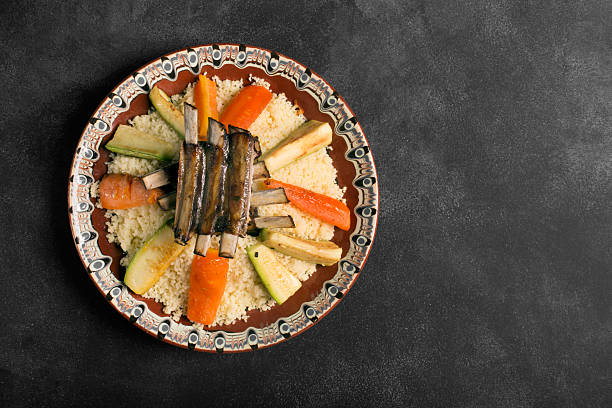

Algerian Couscous


description
Algerian couscous is a staple dish in Algerian cuisine, loved for its versatility, rich flavors, and cultural significance. It is typically made with couscous grains, which are small, steamed balls of crushed wheat, served with a variety of vegetables, meat, and aromatic spices. The preparation of couscous is considered an art in Algerian households, and it often brings families together for special occasions.
Ingredients
- 300g of chicken or lamb
- 200g of couscous
- 1 large onions
- 3 zucchinis
- 3 carrots
- 3 turnips
- 1 cup chickpeas, soaked over night
- 2 tablespoons vegetable oil
- 5 tablespoons of olive oil
- 1 teaspoon turmeric
- 1 teaspoon ground coriander
- 1 teaspoon ground cinnamon
- salt and black pepper
Steps
- In a large bowl, add the couscous and soke it with water then let it drain.
- add some salt and the olive oil then mix well with your hands.
- Place the couscous in the the top part of couscous streamer.
- Leave it for about 15 to 20 minutes, then drizzle 1 cup of water before removing it.
- break apart the couscous and let it rest for 5 to 10 minutes before you place it again in the streamer and you leave it for another 15 to 20 minutes until fluffy.
- Remove the couscous after it becomes fluffy then break it up with a fork.
- In a large pot, heat vegetable oil over medium heat, then add the chopped onions and sauté until translucent.
- Add the meat pieces and the spices and brown them on all sides. After it browns add enough water to cover the meat and bring it to boil.
- After the mixture boils cover the pot and lower the heat and let it simmer until the meat softens.
- After the meat cooks, add the rest of the vegetables along with the chickpeas, and simmer until everything is cooked.